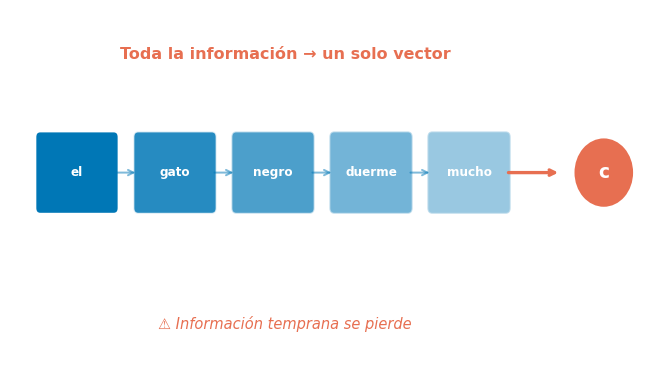
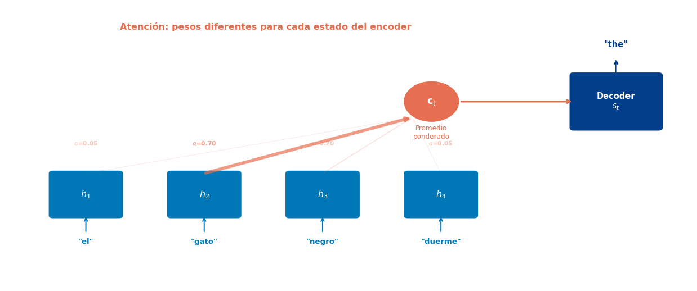
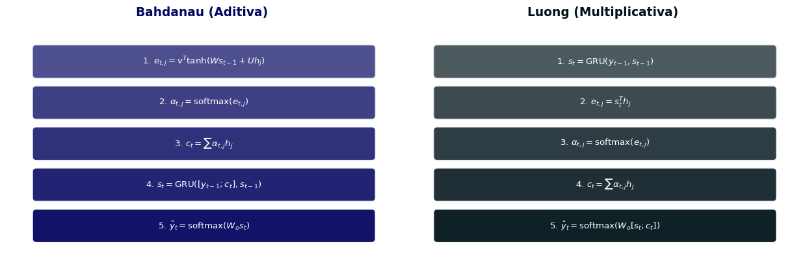
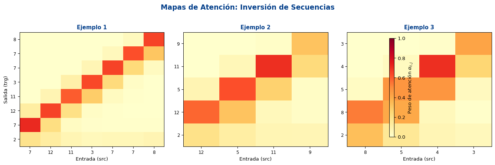
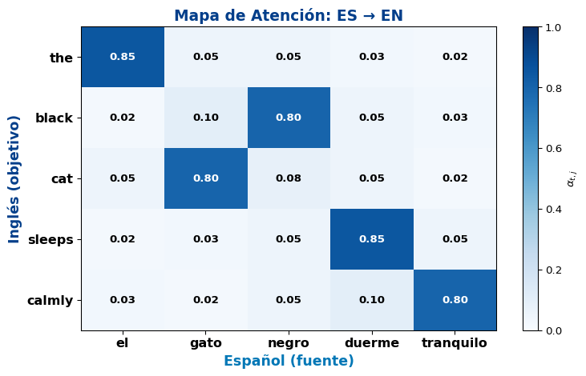
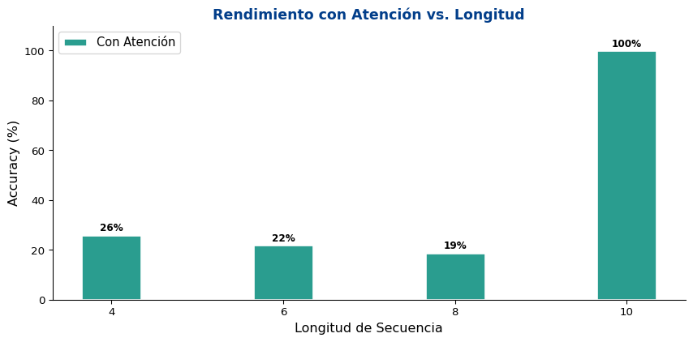

S3: El Mecanismo de Atención
Universidad Católica Boliviana
2026-03-31
Objetivo
Entender el mecanismo de Atención que permite al decoder consultar selectivamente diferentes partes de la entrada, resolviendo el cuello de botella del vector de contexto fijo.
Prerequisitos: Seq2Seq, NMT (Semana 7 S1-S2)
El encoder comprime toda la secuencia en un solo vector:
\[x_1, x_2, \ldots, x_{T_x} \rightarrow \mathbf{c} \in \mathbb{R}^{D_h}\]
El decoder solo ve \(\mathbf{c}\) → pierde detalles de la entrada.
Problemas observados:

Cho et al. (2014) confirmaron
El rendimiento de NMT cae dramáticamente en oraciones de más de ~20 tokens. El cuello de botella del vector fijo es la causa principal.
En lugar de comprimir toda la entrada en un solo vector, ¿qué tal si el decoder pudiera consultar las representaciones de todos los tokens de entrada en cada paso?
Cuando un traductor traduce una oración:
En cada paso de decodificación \(t\):
\[\mathbf{c}_t = \sum_{j=1}^{T_x} \alpha_{t,j} \cdot h_j\]

Diferencia clave con Seq2Seq estándar
El vector de contexto \(\mathbf{c}_t\) es diferente en cada paso de decodificación. Ya no es un vector fijo — es una combinación ponderada de los estados del encoder que cambia según lo que el decoder necesita.
El paper fundacional: “Neural Machine Translation by Jointly Learning to Align and Translate”
1. Score de alineación — ¿qué tan relevante es \(h_j\) para el estado del decoder \(s_{t-1}\)?
\[e_{t,j} = v_a^\top \tanh(W_a \cdot s_{t-1} + U_a \cdot h_j)\]
2. Pesos de atención — normalizar con softmax:
\[\alpha_{t,j} = \frac{\exp(e_{t,j})}{\sum_{k=1}^{T_x} \exp(e_{t,k})}\]
3. Vector de contexto dinámico — combinar estados del encoder:
\[\mathbf{c}_t = \sum_{j=1}^{T_x} \alpha_{t,j} \cdot h_j\]
4. Actualizar el decoder — usando contexto + input:
\[s_t = \text{GRU}([\text{emb}(y_{t-1}); \mathbf{c}_t], \; s_{t-1})\]
¿Por qué “aditiva”?
Porque el score combina \(s_{t-1}\) y \(h_j\) con una suma seguida de \(\tanh\) y un vector aprendido \(v_a\). Los parámetros \(W_a\), \(U_a\) y \(v_a\) se aprenden durante entrenamiento.
import torch
import torch.nn as nn
import torch.nn.functional as F
class BahdanauAttention(nn.Module):
def __init__(self, hidden_dim):
super().__init__()
self.W_a = nn.Linear(hidden_dim, hidden_dim, bias=False)
self.U_a = nn.Linear(hidden_dim, hidden_dim, bias=False)
self.v_a = nn.Linear(hidden_dim, 1, bias=False)
def forward(self, decoder_hidden, encoder_outputs):
"""
decoder_hidden: (batch, hidden_dim) — s_{t-1}
encoder_outputs: (batch, src_len, hidden_dim) — h_1, ..., h_{T_x}
"""
# decoder_hidden → (batch, 1, hidden_dim) para broadcasting
dec_expanded = decoder_hidden.unsqueeze(1)
# Score: v^T tanh(W·s + U·h) → (batch, src_len, 1)
energy = self.v_a(torch.tanh(
self.W_a(dec_expanded) + self.U_a(encoder_outputs)
))
# Pesos: softmax sobre src_len → (batch, src_len)
attention_weights = F.softmax(energy.squeeze(-1), dim=-1)
# Contexto: promedio ponderado → (batch, hidden_dim)
context = torch.bmm(attention_weights.unsqueeze(1),
encoder_outputs).squeeze(1)
return context, attention_weights
# Demo
torch.manual_seed(42)
attn = BahdanauAttention(hidden_dim=64)
fake_dec_h = torch.randn(4, 64) # batch=4
fake_enc_out = torch.randn(4, 8, 64) # src_len=8
ctx, weights = attn(fake_dec_h, fake_enc_out)
print(f"Contexto: {ctx.shape}") # (4, 64)
print(f"Pesos: {weights.shape}") # (4, 8)
print(f"Suma pesos: {weights[0].sum().item():.4f}") # = 1.0
print(f"Pesos[0]: {weights[0].data.numpy().round(3)}")Contexto: torch.Size([4, 64])
Pesos: torch.Size([4, 8])
Suma pesos: 1.0000
Pesos[0]: [0.189 0.101 0.086 0.086 0.131 0.124 0.123 0.16 ]“Effective Approaches to Attention-based Neural Machine Translation” — versión más simple y eficiente.
| Nombre | Score \(e_{t,j}\) |
|---|---|
| dot | \(s_t^\top h_j\) |
| general | \(s_t^\top W_a h_j\) |
| concat | \(v_a^\top \tanh(W_a [s_t; h_j])\) |
La variante dot es la más usada:
| Aspecto | Bahdanau | Luong |
|---|---|---|
| Score | Aditivo (MLP) | Multiplicativo (dot) |
| Estado decoder | \(s_{t-1}\) | \(s_t\) (actual) |
| Contexto se usa en | Input del GRU | Output layer |
| Complejidad | \(O(D_h^2)\) | \(O(D_h)\) para dot |
En la práctica
La variante dot product de Luong evolucionó en el Scaled Dot-Product Attention del Transformer (Semana 9).
class LuongAttention(nn.Module):
def __init__(self, hidden_dim, method='dot'):
super().__init__()
self.method = method
if method == 'general':
self.W_a = nn.Linear(hidden_dim, hidden_dim, bias=False)
def forward(self, decoder_hidden, encoder_outputs):
"""
decoder_hidden: (batch, hidden_dim) — s_t (estado actual)
encoder_outputs: (batch, src_len, hidden_dim)
"""
if self.method == 'dot':
# Score: s_t^T · h_j → (batch, src_len)
energy = torch.bmm(encoder_outputs,
decoder_hidden.unsqueeze(-1)).squeeze(-1)
elif self.method == 'general':
energy = torch.bmm(self.W_a(encoder_outputs),
decoder_hidden.unsqueeze(-1)).squeeze(-1)
attention_weights = F.softmax(energy, dim=-1)
context = torch.bmm(attention_weights.unsqueeze(1),
encoder_outputs).squeeze(1)
return context, attention_weights
# Comparar ambas
luong_attn = LuongAttention(hidden_dim=64, method='dot')
ctx_l, weights_l = luong_attn(fake_dec_h, fake_enc_out)
print(f"Bahdanau pesos: {weights[0].data.numpy().round(3)}")
print(f"Luong pesos: {weights_l[0].data.numpy().round(3)}")
print(f"\nBahdanau: {sum(p.numel() for p in attn.parameters()):,} parámetros")
print(f"Luong (dot): {sum(p.numel() for p in luong_attn.parameters()):,} parámetros")Bahdanau pesos: [0.189 0.101 0.086 0.086 0.131 0.124 0.123 0.16 ]
Luong pesos: [0.022 0.964 0. 0. 0. 0.014 0. 0. ]
Bahdanau: 8,256 parámetros
Luong (dot): 0 parámetros
Observación clave
Bahdanau calcula la atención antes de actualizar el decoder (usa \(s_{t-1}\)). Luong calcula la atención después (usa \(s_t\)). En la práctica, ambas funcionan bien.
import random
class AttentionEncoder(nn.Module):
def __init__(self, vocab_size, embed_dim, hidden_dim):
super().__init__()
self.embedding = nn.Embedding(vocab_size, embed_dim)
self.rnn = nn.GRU(embed_dim, hidden_dim, batch_first=True)
def forward(self, src):
embedded = self.embedding(src)
outputs, hidden = self.rnn(embedded)
return outputs, hidden # ← Ahora retornamos TODOS los estados
class AttentionDecoder(nn.Module):
def __init__(self, vocab_size, embed_dim, hidden_dim):
super().__init__()
self.embedding = nn.Embedding(vocab_size, embed_dim)
self.attention = BahdanauAttention(hidden_dim)
self.rnn = nn.GRU(embed_dim + hidden_dim, hidden_dim, batch_first=True)
self.fc_out = nn.Linear(hidden_dim * 2, vocab_size)
def forward(self, input_token, hidden, encoder_outputs):
embedded = self.embedding(input_token) # (batch, 1, embed_dim)
# Atención: contexto dinámico
context, attn_weights = self.attention(
hidden.squeeze(0), encoder_outputs # s_{t-1}, h_1..h_T
)
# Concatenar embedding + contexto como input del GRU
rnn_input = torch.cat([embedded, context.unsqueeze(1)], dim=-1)
output, hidden = self.rnn(rnn_input, hidden)
# Predicción: concatenar output + contexto
prediction = self.fc_out(torch.cat([output.squeeze(1), context], dim=-1))
return prediction, hidden, attn_weightsimport torch.optim as optim
PAD, SOS, EOS = 0, 1, 2
NUM_DIGITS = 10
VOCAB_SIZE = NUM_DIGITS + 3
def generate_pairs(n, min_len=4, max_len=10):
src_list, trg_list = [], []
for _ in range(n):
length = random.randint(min_len, max_len)
seq = [random.randint(3, VOCAB_SIZE - 1) for _ in range(length)]
src_list.append(seq + [PAD] * (max_len - length))
trg_list.append(list(reversed(seq)) + [EOS] + [PAD] * (max_len - length))
return torch.tensor(src_list), torch.tensor(trg_list)
torch.manual_seed(42)
random.seed(42)
train_src, train_trg = generate_pairs(3000)
test_src, test_trg = generate_pairs(300)
EMBED_DIM = 32
HIDDEN_DIM = 64
BATCH_SIZE = 128
N_EPOCHS = 40
enc_attn = AttentionEncoder(VOCAB_SIZE, EMBED_DIM, HIDDEN_DIM)
dec_attn = AttentionDecoder(VOCAB_SIZE, EMBED_DIM, HIDDEN_DIM)
params = list(enc_attn.parameters()) + list(dec_attn.parameters())
optimizer = optim.Adam(params, lr=0.003)
criterion = nn.CrossEntropyLoss(ignore_index=PAD)
losses_attn = []
for epoch in range(N_EPOCHS):
enc_attn.train(); dec_attn.train()
epoch_loss, n_b = 0, 0
idx = torch.randperm(len(train_src))
for i in range(0, len(train_src), BATCH_SIZE):
bi = idx[i:i+BATCH_SIZE]
src, trg = train_src[bi], train_trg[bi]
enc_out, hidden = enc_attn(src)
input_tok = torch.full((src.size(0), 1), SOS, dtype=torch.long)
all_preds = []
for t in range(trg.size(1)):
pred, hidden, _ = dec_attn(input_tok, hidden, enc_out)
all_preds.append(pred)
if random.random() < max(0.1, 1 - epoch/N_EPOCHS):
input_tok = trg[:, t:t+1]
else:
input_tok = pred.argmax(1, keepdim=True)
outputs = torch.stack(all_preds, dim=1)
loss = criterion(outputs.reshape(-1, VOCAB_SIZE), trg.reshape(-1))
optimizer.zero_grad()
loss.backward()
torch.nn.utils.clip_grad_norm_(params, 1.0)
optimizer.step()
epoch_loss += loss.item()
n_b += 1
losses_attn.append(epoch_loss / n_b)
if (epoch+1) % 10 == 0:
print(f"Época {epoch+1:3d}/{N_EPOCHS} | Loss: {losses_attn[-1]:.4f}")Época 10/40 | Loss: 0.0172
Época 20/40 | Loss: 0.0009
Época 30/40 | Loss: 0.0004
Época 40/40 | Loss: 0.0002# Evaluación con atención
enc_attn.eval(); dec_attn.eval()
all_preds_attn = []
all_weights = []
with torch.no_grad():
enc_out, hidden = enc_attn(test_src)
input_tok = torch.full((test_src.size(0), 1), SOS, dtype=torch.long)
for t in range(test_trg.size(1)):
pred, hidden, attn_w = dec_attn(input_tok, hidden, enc_out)
all_preds_attn.append(pred.argmax(1))
all_weights.append(attn_w)
input_tok = pred.argmax(1, keepdim=True)
predictions_attn = torch.stack(all_preds_attn, dim=1)
attention_matrix = torch.stack(all_weights, dim=1) # (batch, trg_len, src_len)
# Token accuracy
correct, total = 0, 0
for i in range(len(test_src)):
for j in range(test_trg.size(1)):
if test_trg[i, j] != PAD:
total += 1
if predictions_attn[i, j] == test_trg[i, j]:
correct += 1
print(f"Accuracy (con atención): {correct/total:.1%}\n")
# Mostrar ejemplos
print("=" * 55)
print(f"{'Entrada':>25s} → {'Predicción':<25s}")
print("=" * 55)
for i in range(8):
src_tok = [t.item() for t in test_src[i] if t.item() != PAD]
pred_tok = [t.item() for t in predictions_attn[i] if t.item() not in (PAD, EOS, SOS)][:len(src_tok)]
trg_tok = [t.item() for t in test_trg[i] if t.item() not in (PAD, EOS, SOS)]
match = "✅" if pred_tok == trg_tok else "❌"
print(f"{str(src_tok):>25s} → {str(pred_tok):<20s} {match}")Accuracy (con atención): 100.0%
=======================================================
Entrada → Predicción
=======================================================
[7, 12, 11, 3, 7, 7, 8] → [8, 7, 7, 3, 11, 12, 7] ✅
[12, 5, 11, 9] → [9, 11, 5, 12] ✅
[8, 5, 4, 3] → [3, 4, 5, 8] ✅
[9, 5, 10, 3, 9] → [9, 3, 10, 5, 9] ✅
[7, 11, 12, 3, 3, 11, 5] → [5, 11, 3, 3, 12, 11, 7] ✅
[11, 7, 8, 11, 4, 6] → [6, 4, 11, 8, 7, 11] ✅
[11, 11, 12, 11] → [11, 12, 11, 11] ✅
[3, 8, 10, 7, 11] → [11, 7, 10, 8, 3] ✅
Interpretación
En la tarea de inversión, esperamos ver una diagonal invertida: el primer token generado debe atender al último token de entrada, y viceversa. Los mapas de atención nos permiten interpretar qué aprendió el modelo.

Observaciones interesantes

Resultado
La atención mitiga significativamente el problema del cuello de botella. El decoder puede “consultar” directamente los estados relevantes del encoder, sin depender de un solo vector comprimido.
La pregunta revolucionaria (Vaswani et al., 2017)
“Attention Is All You Need”
¿Qué pasaría si elimináramos las RNNs por completo y usáramos solo atención?
→ El Transformer (Semana 9)
| Año | Hito |
|---|---|
| 2014 | Seq2Seq (Sutskever, Cho) |
| 2015 | Atención (Bahdanau, Luong) |
| 2017 | Transformer |
| 2018 | BERT, GPT |
| 2020+ | GPT-3, LLMs |
BahdanauAttention: MLP con \(W_a\), \(U_a\), \(v_a\)LuongAttention: dot product sin parámetros| Concepto | Ecuación |
|---|---|
| Score (Bahdanau) | \(e_{t,j} = v_a^\top \tanh(W_a s_{t-1} + U_a h_j)\) |
| Score (Luong dot) | \(e_{t,j} = s_t^\top h_j\) |
| Pesos de atención | \(\alpha_{t,j} = \text{softmax}_j(e_{t,j})\) |
| Contexto dinámico | \(\mathbf{c}_t = \sum_{j=1}^{T_x} \alpha_{t,j} \cdot h_j\) |
| Decoder (Bahdanau) | \(s_t = \text{GRU}([\text{emb}(y_{t-1}); \mathbf{c}_t], s_{t-1})\) |
Semana 8: Redes Neuronales Convolucionales para NLP
Lectura:
Recordatorio:
¡Gracias!
📧 fsuarez@ucb.edu.bo
🔗 Materiales: github.com/fjsuarez/ucb-nlp
NLP y Análisis Semántico | Semana 7